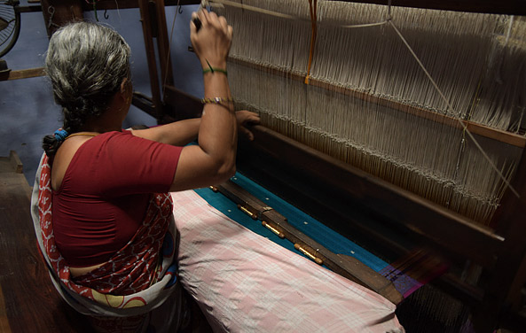

Our Key Initiatives
Transforming rural lives through sustainable livelihoods, improved health, and water security. Click on any project to learn more.
Water, Sanitation & Hygiene (WASH)

Jal Jeevan Mission (KRC)
As a National Key Resource Center (KRC), we conduct capacity building for Level-3 stakeholders across Maharashtra, Madhya Pradesh, and Arunachal Pradesh.

Water Tax Collection Model
A unique initiative in Akola district where 25 Women SHGs officially manage village water tax collection, improving recovery rates and empowering women.

Swachh Bharat Mission 2.0
Training over 14,735 PRI members on solid and liquid waste management (SLWM) to create ODF+ villages.

Sanitation Infrastructure
Established economic latrine production centers in Amravati and Tiwsa to promote affordable access to sanitation infrastructure and better hygiene.
Livelihood & Economic Development
Mahagram Producer Company
Established a surgical cotton processing unit where SHG members hold a 50% participation stake, ensuring direct profit sharing.

Dairy Development
Launched 70+ Dairy units with support from Mother Dairy for market linkage, providing a stable monthly income for rural families.

Rukhmini Sadi Unit
An upcoming textile project at Kaudanyapur designed to generate employment for over 700 women in garment manufacturing.

Skill Development & Training
Trained over 2,000 SHGs under SGSY and NRLM schemes in vocational trades like garment making, bag manufacturing, and school uniforms, boosting employability.
Financial Inclusion
Facilitated bank linkages for over 4,000 SHGs, enabling access to credit for micro-enterprises and fostering economic independence among rural women.
Health & Social Innovation

Go-Ark & Ayurvedic Products
An innovative pilot project at Gopi Village utilizing indigenous resources. SHGs produce and market health essentials like Eye Drops and Drakshasav Tonic.
Innovation
Women's Health Outreach
Conducted specialized health awareness camps supported by NABARD, benefiting over 1,500 women with checkups and guidance.
Social WelfareHimmat Radio Station
A community radio initiative empowering rural voices, spreading awareness about social issues, health, and government schemes.
Community Media